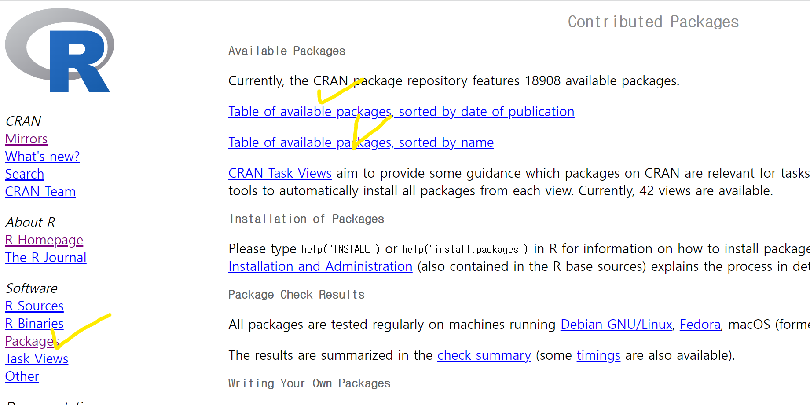
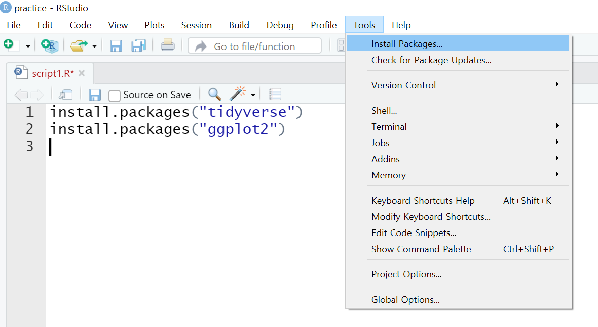
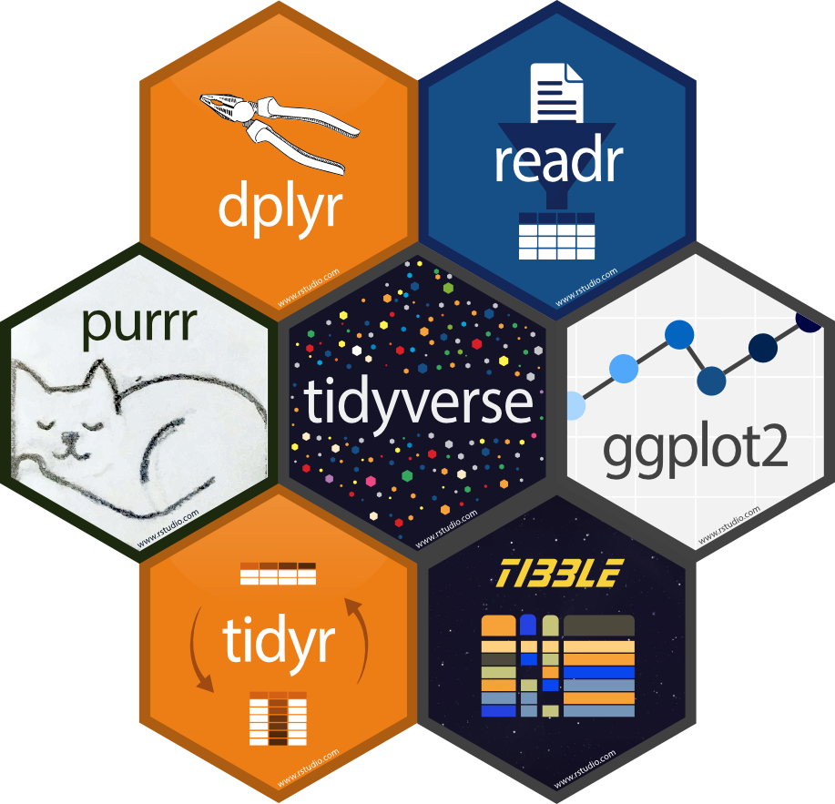

Chapter 2 Basic programming in R
2.1 R 문법의 기초 Communicating in R language
R은 기본적으로 함수형 언어입니다. 함수는 함수명()의 형태로 되어 있고, ( )안에는 필요한 인자들을 입력할 수 있습니다. 인자(argument)란 특정 함수가 실행되는 조건들을 지정해주는 함수의 요소라고 생각하시면 됩니다. (e.g. lm(Y~X, data))
한편, 어떤 인자들은 반드시 괄호 안에 입력해주어야 하는 반면, 어떤 인자는 입력하지 않아도 되는데, 이를 기본인자라고 합니다. 기본인자는 함수를 정의할 때 특정 조건이 미리 지정되어 있는 것이므로 특별히 다른 조건을 원하지 않는다면 생략해도 됩니다. (e.g. q() :R의 종료 명령어)
함수의 기능과 필요한 인자를 찾기 위해 R의 도움말을 참고하시면 됩니다. 알고자 하는 함수에 대한 도움말은 콘솔창에서 help(함수명) 또는 ?함수명 을 입력하면 됩니다. (e.g. help(lm) 또는 ?lm())
다음은 R에서 객체(object) 또는 변수를 만들고 사용하는 방법을 알려 드리겠습니다. R에서 객체란, 데이터가 담겨 있는 메모리의 주소 값, 즉 데이터를 담는 그릇입니다. R에게 분석해야 할 데이터를 줄 때 객체/변수라는 그릇에 담아서(=할당하여) 준다고 생각하시면 됩니다. (e.g.객체/변수 이름 <- 저장할 값)
할당한다는 것의 의미: 값을 객체에 저장한다는 것. 영어로는 assign (지정, 할당). 할당자로는 <-또는 = 을 사용함.
Figure 2.1: 변수 <- 데이터
객체/변수의 이름을 정할 때의 주의사항:
- 이름은 한글, 영어, 숫자 등이 가능하지만 반드시 첫 글자는 문자여야 함
- 이름이 영어일 경우 소문자와 대문자는 다른 글자로 인식함
객체에 값을 할당하는(=변수에 값을 담는) 연습을 해봅시다.
var1 <- 1 # var1 이라는 변수에 숫자 1 담기
var1 # 출력하여 확인
var2 <- 2 # var2 라는 변수에 숫자 2 담기
var2 # 출력하여 확인
var3 <- "대학원생" # var3 변수에 글자 담기.
# "" 주의
var4 <- as.Date("2022-12-01") # 날짜 데이터 담기
var5 <- "Hello world" # 문자열 데이터 담기
# R is case sensitive
age <- 20 # age 라는 변수에 숫자 20 담기
Age <- 50 # Age라는 변수에 숫자 50 담기
# age and Age are different # new line by ; (semicolon)
Name <- "Kossda" ; Age <- 25; City <- "Seoul"
Name
Age
City 2.2 데이터 유형 Data type
이제부터는 객체/변수에 담을 수 있는 데이터 유형을 알아보겠습니다.
2.2.1 숫자형 데이터(numeric)
x <- 100 # assign a number to the variable named x
class(x) # check the class of x
class(5,000) #에러 확인! 숫자 중에는 ,(콤마) 가 없음
#연산 가능
2+3
2*3
2/3
2^3
10%%3
# square root
sqrt(2)
# round to two decimal places
round(1.41421, 2)
# round down to nearest integer
floor(1.41421)
# absolute value
abs(-2)
# exponential
exp(2)
# logarithm
log(2)
# assign to a variable and use these variables to calculate
height <- 170
weight <- 60
# BMI = weight / height^2 (in meter)
BMI <- weight / (height/100)^2 2.2.2 문자형 데이터(character/string/text)
참고) 문자형 데이터를 다루는 데 특화된 패키지: stringr, tidytext
#데이터유형 확인
class(5)
class("5")
class("2022-12-01") #날짜 같지만 문자형
class("Hello World!") #문자열도 문자형
# assign to a variable
greeting <- "Hello World!"
greeting
x = "100"
class(x) # character type: let's convert it to numeric type
as.numeric(x) # converts to numeric type
class(x) # you should assign it to x to update
x = as.numeric(x)
class(x)
x = "kossda"
as.numeric(x) # fails## Warning: 강제형변환에 의해 생성된 NA 입니다2.3 변수 유형 Variable type
데이터를 분석할 때는 변수의 유형 및 속성에 따라 분석기법이 달라집니다.
| 변수 유형 | 예시 | 변수 속성 | R에서 분류 |
|---|---|---|---|
| 명목형(nominal) | 성별: 남성, 여성 | categorical | factor (범주변수) |
| 순서형(ordinal) | 건강상태: poor, good, excellent | ordered/ categorical | factor (범주변수) |
| 연속형(continuous) | 연령: 22, 34, 45 | numerical | numerical (수량변수) |
diabetes <- c(1, 2, 1, 1)
diabetes <- factor(diabetes) #범주변수로 처리
#알파벳 순서로 1=excellent, 2=good, 3=poor로 정함
status <- c("poor", "good", "excellent", "poor")
status <- factor(status)
#순서를 1=poor, 2=good, 3=excellent로 정함
status <- factor(status, levels=c("poor", "good", "excellent"))
status <- factor(status, levels=c("poor", "good", "excellent"), order=TRUE)2.4 데이터 구조 Data structure
R에서 취급하는 데이터는 여러 구조를 가질 수 있습니다. 가장 단순한 형태부터, 실제로 분석에서 많이 쓰이는 형태까지 훑어 봅시다.
2.4.1 벡터(Vector)
- 숫자 또는 문자의 나열
- 하나의 벡터에는 반드시 데이터 유형이 같은 값들만 들어가야 함
v1 <- 1:5
v2 <- c(6:10) # c() : combine
v3 <- seq(from = 1, to = 10, by = 2)
v4 <- rep(0, times = 10)
var1 <- c(1, 2, "3")
class(var1)
# Indexing을 이용한 벡터의 원소 접근 및 연산
v5 <- NULL # empty object
v5[1] <- v1[1] + v1[3]; v5
v5[1] <- v1[1] + v1[3]; v5
v5[2] <- v1[1] / 0; v5
v5[3] <- 0/0; v5
v5 <- v5[-1]; v5 # omit the first element
# 문자열 벡터
fruit <- c("banana", "apple", "pine", "tree")
fruit
grep('p', fruit)
grep('p', fruit, value = T)
paste(fruit[3], fruit[2], sep = "")
substr(fruit[1], 3, 6)2.4.2 행렬(Matrix)
- 여러 개의 벡터로 구성된, 가로 X 세로 형태의 행렬
- 벡터와 마찬가지로 동일한 유형의 데이터가 들어가야 함
mat1 <- matrix(c(1, 3, 6, 9, 12, 15), nrow = 2, ncol = 3); mat1
mat2 <- matrix(c(1, 3, 6, 9, 12, 15), nrow = 2, ncol = 3, byrow = T); mat2
v6 <- as.vector(mat2); v6 # as.vector() : make the object into 'vector'
mat3 <- matrix(v6, nrow = 3, ncol = 2); mat3
# vector를 이용한 matrix 생성
mat4 <- rbind(v1, v2, v3); mat4
mat5 <- cbind(v1, v2, v3); mat5
mat6 <- mat4 %*% mat5; mat6 # matrix multiplication
mat7 <- mat4 * mat4; mat7 # Kronecker product ( Different from %*% !! )
# indexing / 차원 확인
m <- matrix(1:9, 3, 3); m
m[, 1:2]
m[c(1,3),]
m[2:3, 2:3]
dim(m)
length(m)
length(v1)2.4.3 리스트(List)
- 서로 다른 데이터 유형들을 묶어서 하나의 리스트로 저장 가능
- 주로 텍스트 분석에서 많이 사용
- 리스트 = 큰 방
- 변수 = 작은 방 - 값
list1 = list(c(1,5,3), matrix(1:6, nrow=3), c('hello', 'world'))
list1
list1[[1]] ; mode(list1[[1]])
list1[1] ; mode(list1[1])
list1[[2]][2,1]
# list1[2][2,1] # Error !
list1[[2]][2] <- 'world' ; list1[[2]]
list1[c(1,3)]2.4.4 데이터 프레임(Data Frame)
- 다양한 유형의 데이터들을 저장. 가장 많이 사용하는 형태
- 엑셀 표라고 생각하면 됨
| NO | NAME | BIRTH |
|---|---|---|
| 7 | 손흥민 | 1992-07-08 |
| 10 | 해리케인 | 1993-07-28 |
| 9 | 홀란드 | 2000-07-21 |
no <- c(7, 10, 9)
name <- c("손흥민", "해리케인", "홀란드")
birth <- c("1992-07-08", "1993-07-28", "2000-07-21")
player <- data.frame(NO=no, NAME=name, BIRTH=birth)
player
# or
m
data <- data.frame(m); data # Difference btw 'matrix' and 'dataframe' ?
colnames(data)
rownames(data) <- c("N1", "N2", "N3")
data
data <- data.frame(data, "class" = c(1, 1, 3))
data
data[, 4] # data[row index, column index]
data$class # data$variable2.5 R 패키지와 라이브러리 R packages and libraries
- 패키지는 다양한 함수, 명령어, 데이터들의 집합. 원하는 분석에 적합한 패키지를 찾아서 사용하는 것이 중요함. 구글링 필수!
- R에서 기본으로 제공하는 베이스 함수나 데이터 등 외에 특정 분석이 가능하도록 여러 사람이 만들어 제공하는 함수들의 묶음인 패키지들이 존재함.
- CRAN(http://cran.r-project.org)에서 모든 패키지를 직접 검색하고 다운로드할 수 있음. 아래 사진에의 왼쪽의 [Packages]를 클릭하면 패키지가 만들어진 날짜 기준으로 혹은 이름 기준으로 패키지 목록을 확인이 가능하며 다운로드 역시 가능함.

2.5.1 패키지 설치 방법
패키지는 반드시 인터넷 환경이 조성되어야 설치 가능함. 패키지는 라이브러리>문서>R폴더에 저장됨. 경로를 확인하고 싶으면 .libPaths() 명령어 입력.
- 명령어 직접 입력
#install.packages("tidyverse")
#install.packages("ggplot2")
# or
#install.packages(c("tidyverse", "ggplot2"))- 메뉴 이용
- 상단 [Tools] > [Install Packages] 클릭한 후 나타나는 창에 패키지 이름을 입력한 후 다운


- CRAN(http://cran.r-project.org) 이용
2.5.2 패키지 사용하기
패키지를 설치한 후에 그 패키지를 이용해서 분석을 하기 위해서는 설치한 패키지를 불러와야 함.
- 패키지 불러오기: 반드시 library(“패키지명”) 함수로 불러들임. R을 사용하다가 종료하고 다시 시작했을 경우에도 다시 library(“패키지명”)을 실행하여야 패키지 안에 여러 함수나 데이터들을 쓸 수 있음.
#install.packages("tidyverse")
#install.packages("ggplot2")
#library("tidyverse")
#library("tidyverse")
# update.packages("패키지명") # 설치되어 있는 해당 패키지 업데이트
# installed.packages() # 어떤 패키지들이 설치되어 있는지 확인
# remove.packages("패키지명”) # 해당 패키지 삭제- 자주 쓰이는 패키지 tidyverse
